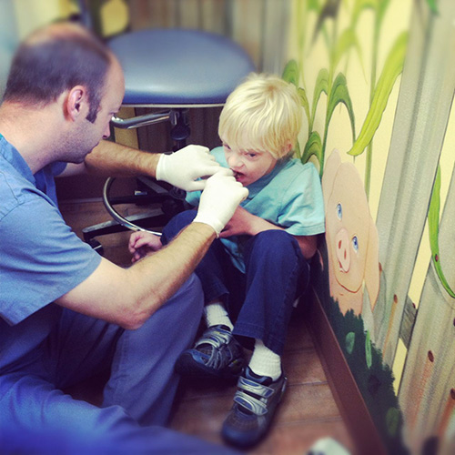
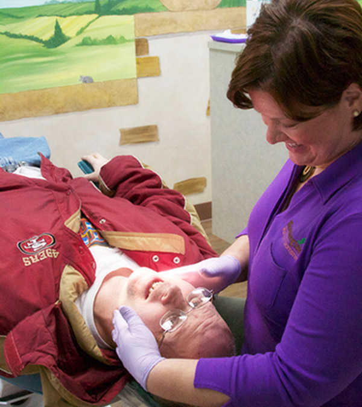
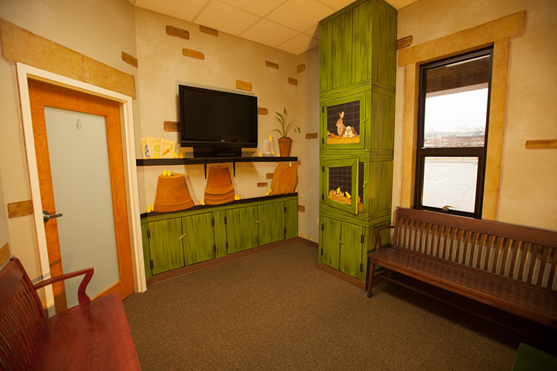
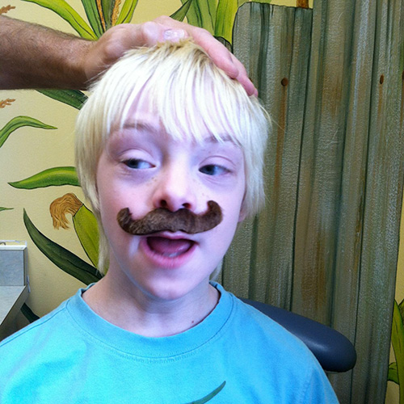

To some degree each and every child has special needs in order for them to do well in a new or unique environment. At Bloomington Pediatric Dentistry, we want to know everything about your child that makes them who they are so we may do our job to the best of our ability, and help them succeed at their dental appointments. We have many unique sights, smells, tastes, and sounds in the Floss and Brush Castle. Not all children respond to those stimuli in the same way; we will do our best to introduce them in a way that fits your child’s personality and comfort level.
One of the amazing things about Bloomington Pediatric Dentistry is all three of our doctors completed their pediatric dental residency training at Riley Hospital for Children, which included working with and learning about children with special needs for two years. Our doctors and staff find working with special needs patients of all ages to be a privilege and welcome them wholeheartedly into our practice.
As you may have already seen, our office has been designed to accommodate all kinds of situations. If your child does better in a quiet environment, we have private, quiet examination rooms  as well as a separate quiet waiting area. Some children may do better in a room that does not look like a traditional dental office so we designed rooms with benches instead of dental chairs.
 Our doctors can count the teeth of a child who is standing up, sitting on the floor, or sitting on a parent’s lap. There is never an expectation of how things “must” or “have to" happen. If your child utilizes a wheel chair or motorized chair, our entire office has been designed for ease of travel. We also have treatment areas where they can stay right in their chair if that is more comfortable for the child. Recently we invested in a new “dentist’s toothbrush“ that is cordless and extremely quiet. We have had success introducing this brush to many children that had previously been overwhelmed by the noise, vibration, or appearance of the traditional equipment. It also means we can now polish teeth in other places besides the dental chair! We are always looking for ways to make visits easier and to accommodate everyone’s needs.
Our doctors can count the teeth of a child who is standing up, sitting on the floor, or sitting on a parent’s lap. There is never an expectation of how things “must” or “have to" happen. If your child utilizes a wheel chair or motorized chair, our entire office has been designed for ease of travel. We also have treatment areas where they can stay right in their chair if that is more comfortable for the child. Recently we invested in a new “dentist’s toothbrush“ that is cordless and extremely quiet. We have had success introducing this brush to many children that had previously been overwhelmed by the noise, vibration, or appearance of the traditional equipment. It also means we can now polish teeth in other places besides the dental chair! We are always looking for ways to make visits easier and to accommodate everyone’s needs.
{kind=link}


Some patients may do better with a series of desensitization visits. This is where we will try small tasks and attempt to build confidence and familiarity from one appointment to the next.  If we can familiarize a child with their surroundings and make them comfortable, often we are able to complete an exam, cleaning, and work up to things like radiographs. Some current patients come with their parent or caregiver a few days prior to their appointment to sit in the waiting room so they can become familiar again with the office. Some children simply sit in a dental chair for a little while prior to their appointment. We are willing to try just about anything in an effort to get a patient comfortable in their surroundings! If we are not able to attain that level of comfort and the child has emergent dental needs, our doctors maintain hospital privileges at Indiana University Health Bloomington Hospital, Southern Indiana Surgery Center, and Riley Hospital for Children so we may utilize general anesthesia to help complete dental treatment.
Testimonials
"Our family has been coming to Bloomington Pediatric Dentistry for 9 years. All three of our children have wonderful experiences at each visit. From the murals on the walls and the kid friendly television shows playing in the waiting room, to the extremely friendly and knowledgeable office staff the entire place is child friendly. One of our children has special needs, and we are thrilled with the care and concern shown to him at each visit. Dr. Taylor knows him by name and really goes the extra mile to ensure that each visit goes as smoothly as possible. They address his concerns and even purchased equipment that makes the experience easier on him. The dentists and staff members treat all our children kindly and really make an effort to make each visit pleasant. We love Bloomington Pediatric Dentistry!"
Caree Jent
"THANK YOU. YOU have been so kind,helpful to my son,can't say enough how great you've been. Recommend BPD for your child."
Judy Burhans
Awards
Recently, Bloomington Pediatric Dentistry received the Community Partners Award from the Board of Directors at Stone Belt, Arc, in recognition of the excellent, integrative care the consumers of Stone Belt receive in our dental office. We were honored and touched to be recognized!